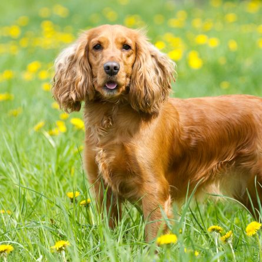

Esse fiel companheiro de porte médio também pode ser bastante corajoso e resistente. Considerado o menor dos cãezinhos spaniels, o Cocker Spaniel Americano costuma ser muito fiel ao tutor e ama estar na companhia da sua família humana. A raça, aliás, também é conhecida por sua docilidade e por compartilhar diversos momentos de afetos. Esse pet carrega ainda uma personalidade cheia de resistência física e determinação, por isso, é excelente para aqueles que procuram por um verdadeiro amigão de quatro patas. Apesar de preservar seu instinto de caça, ele é extremamente amoroso e dedicado.
Mesmo que seja o mais compacto entre as versões de Spaniels, esse cachorro é bastante veloz e possui uma resistência fora do comum. Além disso, seus membros posteriores são bem avantajados e musculosos. Esse não é um bichinho preguiçoso! O cãozinho dessa raça demonstra um ávido interesse pelo trabalho. O pet também adora estar sempre em movimento, e conta com um corpo perfeitamente longo que permite que ele caminhe ou corra com firmeza.
Fizemos um gráfico nivelando de 0 a 5 as características da raça, veja a baixo!
Fizemos um gráfico nivelando de 0 a 5 as características da raça, veja a baixo!
Como já citado, o Cocker Spaniel Americano é bastante inteligente e, portanto, seu adestramento não é difícil. Porém, esse pet não gosta de comando de vozes que considere rígido. Nesses casos, ele tende a resistir um pouco quanto ao aprendizado. Mas, de modo geral, é um bichinho super bem educado e pode ser facilmente treinado. Aliás, esse amiguinho de quatro patas também ama pequenas caminhadas ao ar livre e, como tem tendência a obesidade, manter uma rotina regular de exercícios pode ajudar.
Considerado o menor dos cãezinhos de grupos esportivos e super brincalhão, o Cocker Spaniel Americano possui orelhinhas comprimidas e cobertas de pelos. Eles, inclusive, podem ser ondulados ou cacheados. Além disso, o pet possui pernas traseiras maiores e bem definidas. Esse também é um pet bem musculoso e veloz. Sua movimentação é bem suave, graças ao equilíbrio perfeito entre os membros posteriores e dianteiros. Por fim, contém uma bela e longa pelagem de cores variadas que sobrepõe todo o corpo desse encantador animalzinho.
O Cocker Spaniel Americano exige cuidados essenciais para a saúde da sua pelagem. Por isso, é importante levá-lo ao Pet Shop pelo menos a cada seis ou oito semanas para banho e tosa, além de demais cuidados estéticos. Por falar neles, esse cãozinho também precisa de uma atenção especial quanto as orelhinhas e região dos olhos. Sendo necessário higienizá-las sempre que necessário para evitar possíveis problemas de saúde. Uma das suas características mais marcantes, as orelhinhas do Cocker Spaniel também podem apresentar problemas, como infecção. Por isso, é tão importante cuidar para mantê-las limpas. O ideal é higienizá-las uma vez por semana. Além disso, escove seus lindos pelinhos enrolados com certa frequência. Dessa forma, você evita que eles embaracem e prejudiquem a saúde do cãozinho. Por fim, o tutor ainda garante o bem-estar e vitalidade do seu amiguinho.
Cuide para que seu novo amiguinho seja bem recepcionado em casa. Procure oferecer tudo o que um Cocker Spaniel Americano filhote necessita para se sentir mais confortável e garantir seu bem-estar e comodidade quando chegar a nova família. Aproveite os primeiros meses de vida para ensiná-lo algumas tarefas básicas, como onde fazer suas necessidades e quais ambientes pode ou não frequentar. Para completar, dê muita atenção a pet, afinal, essa é a fase essencial para que ele pegue confiança no tutor.